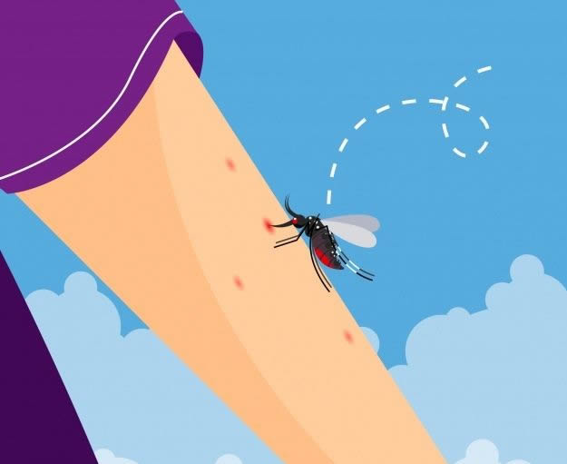
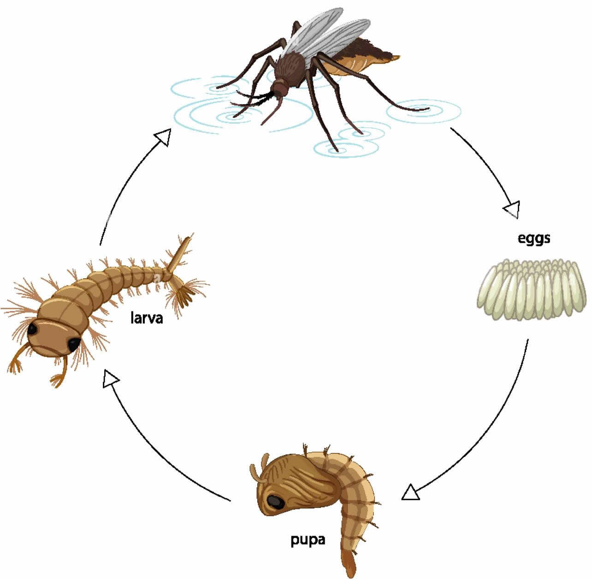
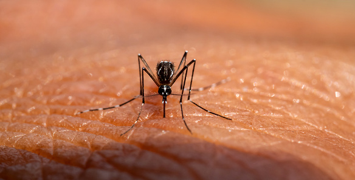
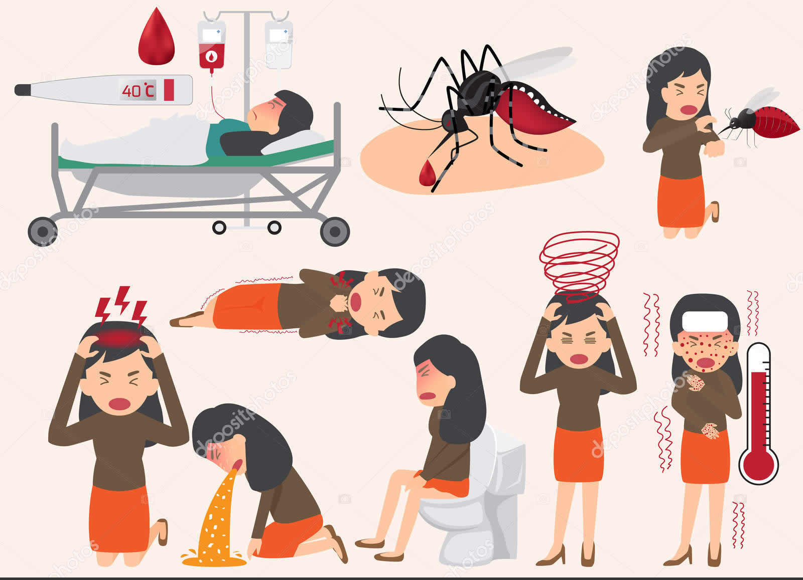
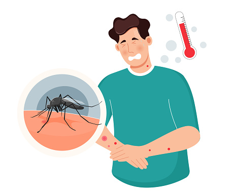
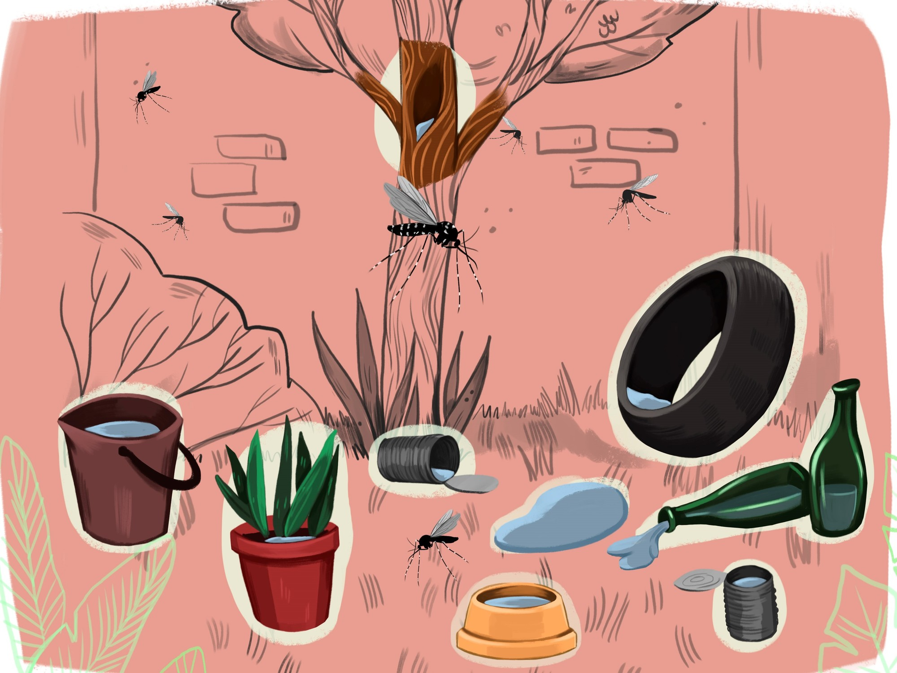

El dengue se transmite a través de la picadura de mosquitos infectados, principalmente del mosquito Aedes aegypti. Este mosquito se encuentra comúnmente en áreas urbanas y periurbanas, donde prospera en lugares con agua estancada. A continuación, se describen los pasos del ciclo de transmisión:
El ciclo comienza cuando un mosquito Aedes aegypti pica a una persona infectada con el virus del dengue y adquiere el virus en su sistema.

El virus se incuba y se multiplica dentro del mosquito durante un período de 8 a 12 días, convirtiéndolo en un vector infeccioso.

El mosquito infectado pica a una persona sana y transmite el virus a través de su saliva, introduciéndolo en el torrente sanguíneo de la persona.

Una vez en el cuerpo humano, el virus del dengue se multiplica y se propaga, afectando el sistema inmunológico de la persona.

La persona infectada puede desarrollar síntomas de dengue y, si es picada por otro mosquito Aedes aegypti, el ciclo de transmisión se repite.

El dengue es prevalente en regiones tropicales y subtropicales de todo el mundo, incluyendo América Latina, el sudeste asiático, el Pacífico occidental y partes de África. Los factores que contribuyen a la propagación del dengue incluyen:
Aumento de la urbanización: La concentración de población en áreas urbanas crea un entorno favorable para los mosquitos Aedes, que prefieren criaderos artificiales como recipientes con agua estancada.
Falta de saneamiento adecuado: La acumulación de agua en recipientes y residuos facilita la reproducción de mosquitos.

Movilidad humana: Los viajes internacionales y el transporte comercial permiten la diseminación del mosquito y del virus a nuevas áreas.